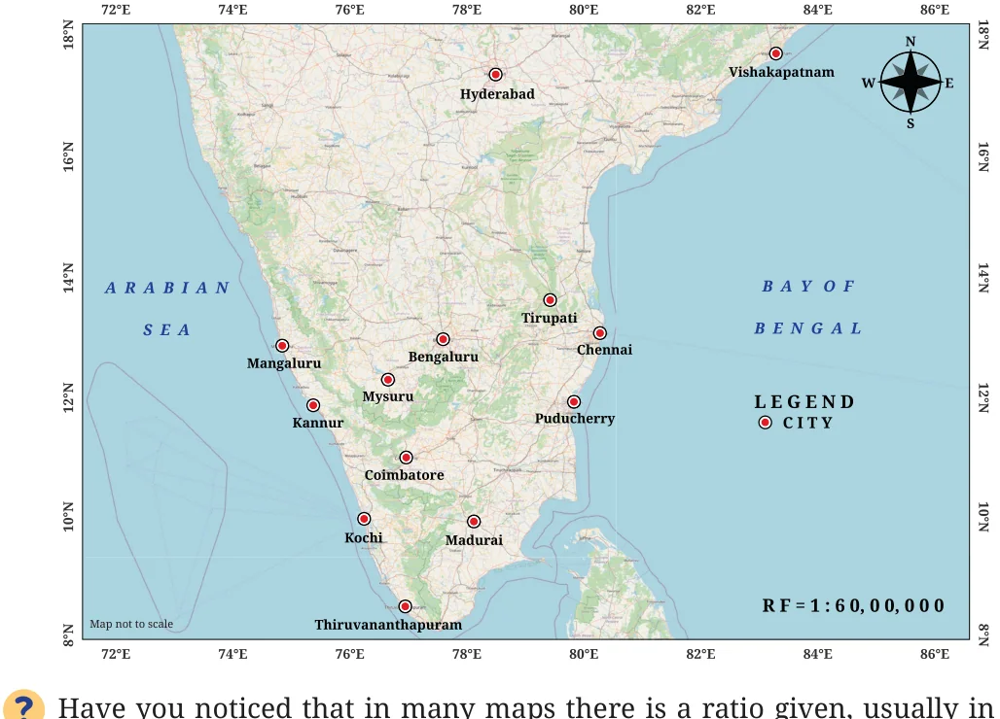

<!DOCTYPE html>
<html lang="en">
<head>
<meta charset="UTF-8">
<meta name="viewport" content="width=device-width,initial-scale=1">
<title>3.2 Ratios in Maps — Proportional Reasoning 2</title>
<meta name="description" content="Class 8 Mathematics · Part 2 · Proportional Reasoning 2 · 3.2 Ratios in Maps">
<link rel="icon" href="data:image/svg+xml,<svg xmlns='http://www.w3.org/2000/svg' viewBox='0 0 100 100'><text y='.9em' font-size='90'>📘</text></svg>">
<link rel="stylesheet" href="../../../assets/book.css">
<link rel="stylesheet" href="https://cdn.jsdelivr.net/npm/katex@0.16.11/dist/katex.min.css" crossorigin="anonymous">
</head>
<body>
<header class="topbar">
<div class="topbar-in">
  <div class="crumb">
    <span class="c1"><a href="../../../index.html">Library</a> · <a href="../../index.html">Class 8 Mathematics · Part 2</a></span>
    <span class="c2">Proportional Reasoning 2 · 3.2 Ratios in Maps</span>
  </div>
  <a class="tb-btn" data-nav="prev" href="../../03-proportional-reasoning-2/01-proportionality-a-quick-recap-3.1/index.html" title="3.1 Proportionality — A Quick Recap">←</a>
  <details class="drawer"><summary class="tb-btn" title="Sections in this chapter">☰</summary>
<div class="drawer-panel"><div class="dh">Proportional Reasoning 2</div><a href="../01-proportionality-a-quick-recap-3.1/index.html">3.1 Proportionality — A Quick Recap</a><a href="../02-ratios-in-maps-3.2/index.html" aria-current="page">3.2 Ratios in Maps</a><a href="../03-ratios-with-more-than-2-terms-3.3/index.html">3.3 Ratios with More than 2 Terms</a><a href="../04-dividing-a-whole-in-a-given-ratio-3.4/index.html">3.4 Dividing a Whole in a Given Ratio</a><a href="../05-figure-it-out/index.html">Figure it Out</a><a href="../06-a-slice-of-the-pie-3.5/index.html">3.5 A Slice of the Pie</a><a href="../07-figure-it-out/index.html">Figure it Out</a><a href="../08-inverse-proportions-3.6/index.html">3.6 Inverse Proportions</a><a href="../09-figure-it-out/index.html">Figure it Out</a><a href="../10-figure-it-out/index.html">Figure it Out</a><a href="../11-summary/index.html">SUMMARY</a></div></details>
  <a class="tb-btn" data-nav="next" href="../../03-proportional-reasoning-2/03-ratios-with-more-than-2-terms-3.3/index.html" title="3.3 Ratios with More than 2 Terms">→</a>
  <button class="tb-btn" data-theme-toggle title="Toggle light / dark" aria-label="Toggle light or dark theme">◐</button>
</div>
<div class="progress"><span style="width:31.4%"></span></div>
</header>
<main class="wrap">
<div class="sec-head">
  <p class="eyebrow"><a href="../index.html">Chapter 3 · Proportional Reasoning 2</a></p>
  <h1>3.2 Ratios in Maps</h1>
  <p class="sec-meta">Textbook pages 2–3 · 6 figures</p>
</div>
<article class="prose">
<figure class="fig wide"></figure>
<p>the lower right corner of the map? It usually contains 1 and a very large number, such as 1 : 60,00,000. What does RF 1 : 60,00,000 mean? What does it indicate? Can you guess? A Representative Fraction (RF) is an expression that shows the ratio between a distance on the map and the corresponding actual distance on the ground. For example, if the ratio on a map is 1 : 60,00,000, that means a distance of 1 cm on the map is equivalent to a geographical distance of 60,00,000 cm. Remember, this is geographical distance and not road distance! Convert 60,00,000 cm to kilometres. It is 60 km. Verify this.</p>
<p>Using the map above, can you find the geographical distance between Bengaluru and Chennai? Also, find the geographical distance between Mangaluru and Chennai. [Hint: Use a ruler to find the distance between the cities on the map. Then, use the ratio given on the map to find the actual geographical distance.]</p>
<figure class="fig wide"></figure>
<figure class="fig wide"></figure>
<p>Try to find the distances between the same two pairs of cities with different maps that have different scales (ratios). Do they all give the same geographical distance, approximately?</p>
<p>Note to the Teacher: Bring maps and atlases to the classroom and encourage students to observe the scale given as a ratio (usually in the lower right corner) on the map. Use the maps and atlases in the library and ask students to find the geographical distances between two locations on the map that are of local interest. Ask them to verify with each other if they get similar distances and to find the reasons if the distances are very different.</p>
<p>Map Making Activity: Guide students to make a sketch of their classroom with an accurate scale (ratio of 1: 50). They should mark the location of various objects in the classroom like the teacher᾿s desk, blackboard, fans and lights, according to scale. Students can use appropriate symbols to represent different objects like fans, lights, tables, chairs, and so on.</p>
</article>
<nav class="pager"><a class="" data-nav="prev" href="../../03-proportional-reasoning-2/01-proportionality-a-quick-recap-3.1/index.html"><span class="dir">← Previous</span><span class="t">3.1 Proportionality — A Quick Recap</span><span class="ch">Proportional Reasoning 2</span></a><a class="nx" data-nav="next" href="../../03-proportional-reasoning-2/03-ratios-with-more-than-2-terms-3.3/index.html"><span class="dir">Next →</span><span class="t">3.3 Ratios with More than 2 Terms</span><span class="ch">Proportional Reasoning 2</span></a></nav>
</main><footer class="site">Generated from the source textbook PDFs · text, figures and exercises belong to their respective publishers.</footer><script defer src="https://cdn.jsdelivr.net/npm/katex@0.16.11/dist/katex.min.js" crossorigin="anonymous"></script>
<script defer src="https://cdn.jsdelivr.net/npm/katex@0.16.11/dist/contrib/auto-render.min.js" crossorigin="anonymous"
  onload="renderMathInElement(document.body,{delimiters:[
    {left:'\\(',right:'\\)',display:false},
    {left:'$$',right:'$$',display:true},
    {left:'\\[',right:'\\]',display:true}],throwOnError:false,ignoredTags:['script','noscript','style','textarea','pre','code']})"></script>
<script src="../../../assets/book.js"></script>
<script defer src="../../../../assets/search.js?v=1789782769"></script>
<script defer src="../../../../assets/screenshot.js?v=1789782769"></script>
</body>
</html>
